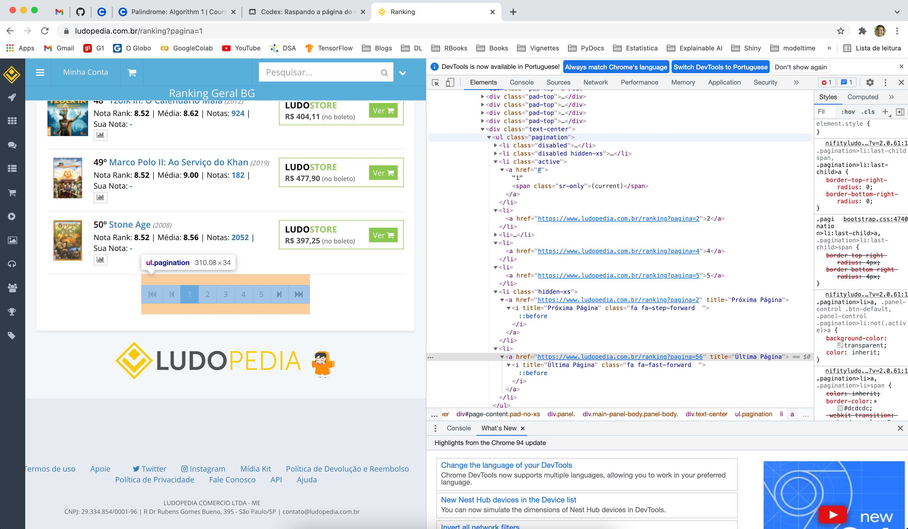

Motivação
Há algum tempo atrás eu explorei o caminho para raspar os dados do ranking do BoardGameGeek1, e consolidei o passo-a-passo nesse post e script. Meu principal interesse naquele momento era que eu precisava obter o código numérico identificador de cada título a fim de poder usar esse valor quando fosse interagir com a API XML do BGG. Como o único lugar em que encontrei essa informação foi no hyperlink para a página de cada título na tabela do ranking, resolvi criar aquele scrapper.
Uma outra fonte de informação sobre jogos de tabuleiro é o site brasileiro da Ludopedia. Este portal tem muita coisa em comum com o BGG, inclusive uma API e uma página de ranking. Todavia, diferente do equivalente gringo, a Ludopedia oferece (1) uma REST API e (2) um meio mais fácil de obter o código identificador de cada título a partir da própria API. De toda forma, no momento em que escrevo este post, ainda não é possível obter as informações da página do ranking diretamente pela API. Desta forma, aqui também existe a possibilidade de exercitar um pouco o web scrapping para a extração dessa informação.
Vou aproveitar esta oportunidade para continuar construindo uma trilha a partir da qual construiremos uma base de dados que nos permitirá responder muitas outras perguntas interessantes, e aplicar técnicas bastante legais de Machine Learning. Falo mais sobre essas idéias ao final desse post.
Raspando o Ranking
Para começar a nossa tarefa, vamos importar o combo de pacotes tradicionais para fazer o scrapper, o parser e tratar os dados.
A seguir, vamos racionalizar o web scrapping usando aquele mesmo fluxo que o pessoal da Curso-R sugere: (1) identificar, (2) navegar, (3) replicar, (4) parsear, (5) validar e (6) iterar. Para arrematar, vamos adicionar uma etapa de (7) faxinar os dados.
Identificar
A primeira coisa aqui é navegar até a página-alvo e entender como funciona a sua paginação e onde está o conteúdo que queremos raspar. A figura abaixo mostra um print da primeira página do ranking, onde podemos ver a url que precisaremos visitar bem como constatar que a paginação funciona incrementando a contagem da página (i.e., pagina=1, pagina=2,…)2.
Outro ponto importante é que as informação que queremos parecem estar em uma tabela, como foi no caso do BGG. Além disso, cada página contém 50 jogos ordenados de forma sequencial de acordo com a sua posição no ranking.
Show code
include_graphics(path = 'images/imagem_1.jpg')

Navegar
O próximo passo é olhar o fluxo de informação da página a partir da aba Network, acessível através da ferramenta Inspecionar do navegador. Podemos ver que o conteúdo que queremos raspar não é produzido a partir de nenhuma API nem nada parecido, mas totalmente disponível a partir do código HTML mesmo. Além disso, podemos ver que o conteúdo não está organizado dentro de tags de tabela em HTML, mas sim dentro de várias tags div associadas à classe pad-top. Isto já torna o parser deste scrapper diferente daquele do BGG, onde foi bastante simples tabular as informações a partir do código HTML.
Show code
include_graphics(path = 'images/imagem_2.jpg')

Replicar
Vamos então tentar fazer um request da primeira página do ranking e ver o que conseguimos. Isso é feito de forma bem simples, passando apenas a url base para acessar a página e deixando o valor correspondente à página como algo a ser determinado separadamente. Faremos isso usando a função GET do pacote httr.
## url base do ranking
base_url <- 'https://www.ludopedia.com.br/ranking?pagina='
# fazendo o GET
resultado <- GET(url = str_glue(base_url, 1))
resultado
Response [https://www.ludopedia.com.br/ranking?pagina=1]
Date: 2021-10-25 02:49
Status: 200
Content-Type: text/html; charset=UTF-8
Size: 132 kB
<!DOCTYPE html PUBLIC "-//W3C//DTD XHTML 1.1//EN" "http://www.w3.or...
<html xmlns="http://www.w3.org/1999/xhtml"
xmlns:og="http://ogp.me/ns#"
xmlns:fb="https://www.facebook.com/2008/fbml"
lang="pt-BR"
>
<head>
<meta charset="utf-8">
<meta name="viewport" content="width=device-width, initial-scale=1...
...Apesar da forma como o conteúdo está disponível nesta página ser diferente daquele do BGG, o request em si parace também ser bem simples!
Parsear
Como vimos anteriormente, as informações que queremos não estão formatadas e organizadas dentro de tags de tabela em HTML. Portanto, precisaremos identificar e parsear cada uma das informações que queremos usando os respectivos xpath. Para começar, podemos ver que temos acesso ao hyperlink que leva à imagem da capa do jogo se extrairmos o atributo src a partir da classe img-capa dentro da tag img. Isto pode ser uma informação legal se, depois, e.g. quisermos plotar essa imagem como uma célula em uma tabela do reactable.
resultado %>%
# pegando o conteudo
content() %>%
# pegando a imagem da capa
xml_find_all(xpath = '//img[@class="img-capa"]') %>%
# pegando o url
xml_attr(attr = 'src') %>%
# pegando a primeira observação
head(1) %>%
# plotando a imagem de uma capa
magick::image_read() %>%
# aumentando a resolução da imagem
magick::image_scale(geometry = '300')
Outra informação legal de buscar é o hyperlink para a página de cada jogo no domínio da Ludopedia. Esta informação está dentro da tag que contém o nome do título (i.e., classe media-heading dentro do header h4), e pode ser obtida extraindo o atributo href de dentro da tag a. Como já conheço a API REST da Ludopedia, sei que essa informação pode ser útil para e.g. raspar o campo de descrição completa do jogo, a fim de utilizar esse texto em alguma análise.
resultado %>%
# pegando o conteudo
content() %>%
# pegando o conteudo do titulo do mini-box
xml_find_all(xpath = '//h4[@class="media-heading"]') %>%
# pegando todos os links
xml_find_all(xpath = 'a') %>%
# extraindo o atributo dos hiperlinks
xml_attr(attr = 'href') %>%
# pegando algumas instancias apenas
head()
[1] "https://www.ludopedia.com.br/jogo/gloomhaven"
[2] "https://www.ludopedia.com.br/jogo/gaia-project"
[3] "https://www.ludopedia.com.br/jogo/terra-mystica"
[4] "https://www.ludopedia.com.br/jogo/terraforming-mars"
[5] "https://www.ludopedia.com.br/jogo/brass-birmingham"
[6] "https://www.ludopedia.com.br/jogo/brass-lancashire" A posição do ranking também pode ser extraída a partir da classe media-heading dentro do header h4, olhando a classe rank dentro da tag span…
resultado %>%
# pegando o conteudo
content() %>%
# pegando o conteudo do titulo do mini-box
xml_find_all(xpath = '//h4[@class="media-heading"]') %>%
# pegando o ranking
xml_find_all(xpath = 'span[@class="rank"]') %>%
# pegando o texto
xml_text() %>%
# pegando algumas instancias apenas
head()
[1] "1º" "2º" "3º" "4º" "5º" "6º"…enquanto o nome do jogo pode ser extraído a partir do atributo title dentro da tag a…
resultado %>%
# pegando o conteudo
content() %>%
# pegando o conteudo do titulo do mini-box
xml_find_all(xpath = '//h4[@class="media-heading"]') %>%
# pegando o nome do jogo
xml_find_all(xpath = 'a[@title]') %>%
# pegando o texto
xml_text() %>%
# pegando algumas instancias apenas
head()
[1] "Gloomhaven" "Projeto Gaia" "Terra Mystica"
[4] "Terraforming Mars" "Brass: Birmingham" "Brass: Lancashire"…o ano de lançamento de cada título vêm do atributo small…
resultado %>%
# pegando o conteudo
content() %>%
# pegando o conteudo do titulo do mini-box
xml_find_all(xpath = '//h4[@class="media-heading"]') %>%
# pegando o ano de lançamento do jogo
xml_find_all(xpath = 'small') %>%
# pegando o texto
xml_text() %>%
# pegando algumas instancias apenas
head()
[1] " (2017)" " (2017)" " (2012)" " (2016)" " (2018)" " (2017)"…enquanto, finalmente, todas as informações relacionadas às notas podem ser extraídas a partir da classe rank-info dentro da tag div.
resultado %>%
# pegando o conteudo
content() %>%
# pegando o conteudo do titulo do mini-box
xml_find_all(xpath = '//h4[@class="media-heading"]') %>%
# pegando as notas do jogo
xml_find_all(xpath = '//div[@class="rank-info"]') %>%
# pegando o texto
xml_text() %>%
# pegando algumas instancias apenas
head() %>%
# tirando um pouco o excesso de whitespace
str_squish()
[1] "Nota Rank: 9.04 | Média: 9.20 | Notas: 646 | Sua Nota: -"
[2] "Nota Rank: 9.00 | Média: 9.11 | Notas: 994 | Sua Nota: -"
[3] "Nota Rank: 9.00 | Média: 9.04 | Notas: 2217 | Sua Nota: -"
[4] "Nota Rank: 9.00 | Média: 9.04 | Notas: 2321 | Sua Nota: -"
[5] "Nota Rank: 8.94 | Média: 9.10 | Notas: 625 | Sua Nota: -"
[6] "Nota Rank: 8.93 | Média: 9.15 | Notas: 463 | Sua Nota: -" Com isso, temos um sashimi de parsers para pegar todas as informações que queremos a partir da página do ranking. Vamos agora consolidar esse entendimento e validá-lo na segunda página.
Validar
Para auxiliar na tarefa de raspar e parsear a segunda página do ranking, vamos definir duas funções abaixo - uma para cada tarefa. A função pega_pagina recebe a url base do ranking e o número da página que queremos raspar, fazendo então o request da página e salvando o HTML resultante em disco, no diretório definido pelo argumento path. A outra função, parser_pagina, recebe como único argumento o path para o arquivo HTML que a função pega_pagina salvou, e faz o que o próprio nome da função já diz. Ela está bem verbosa, mas o objetivo é mesmo deixar claro o que estamos fazendo.
# função para fazer o GET
pega_pagina <- function(url_base, pagina, save_dir) {
## junta a base url com o numero da pagina e salva no diretorio alvo
GET(url = str_glue(url_base, pagina),
write_disk(path = sprintf(fmt = '%s/pagina_%03d.html', save_dir, pagina),
overwrite = TRUE)
)
# esperanando antes de prosseguir
Sys.sleep(runif(n = 1, min = 1, max = 5))
}
# função para parsear uma pagina
parser_pagina <- function(path_to_html){
## lendo a pagina raspada
pagina_raspada <- read_html(x = path_to_html)
## infos do heading
media_head <- pagina_raspada %>%
xml_find_all(xpath = '//h4[@class="media-heading"]')
## link para a imagem da capa
links_da_capa <- pagina_raspada %>%
xml_find_all(xpath = '//img[@class="img-capa"]') %>%
xml_attr(attr = 'src')
## link para a pagina do jogo
link_jogo <- media_head %>%
xml_find_all(xpath = 'a') %>%
xml_attr(attr = 'href')
## posicao do ranking de cada titulo
posicao_ranking <- media_head %>%
xml_find_all(xpath = 'span[@class="rank"]') %>%
xml_text()
## nome do jogo
titulo_jogo <- media_head %>%
xml_find_all(xpath = 'a[@title]') %>%
xml_text()
## ano de lancamento do jogo
ano_jogo <- media_head %>%
xml_find_all(xpath = 'small') %>%
xml_text()
## informacoes gerais das notas
notas_jogo <- pagina_raspada %>%
xml_find_all(xpath = '//div[@class="rank-info"]') %>%
xml_text()
## colocando rsultados numa tibble
tibble(
ranking = posicao_ranking,
titulo = titulo_jogo,
ano = ano_jogo, #
notas = notas_jogo,
link_capa = links_da_capa,
link_jogo = link_jogo
)
}
Com as funções definidas, agora é hora de utilizá-las! Primeiro, vamos pegar a segunda página e salvá-la em disco…
# pegando a segunda pagina do ranking
pega_pagina(url_base = base_url, pagina = 2, save_dir = 'data/')
# checando para ver se o html foi baixado
dir_ls(path = 'data/', regexp = '.html')
data/pagina_002.html…agora vamos parsear a página a partir do arquivo salvo em disco.
parser_pagina(path_to_html = dir_ls(path = 'data/', regexp = '.html'))
# A tibble: 50 × 6
ranking titulo ano notas link_capa link_jogo
<chr> <chr> <chr> <chr> <chr> <chr>
1 51º Lords of Waterdeep " (2… "\r\… https://… https://…
2 52º Ilha dos Dinossauros " (2… "\r\… https://… https://…
3 53º 7 Wonders " (2… "\r\… https://… https://…
4 54º El Grande Big Box " (2… "\r\… https://… https://…
5 55º Agricola " (2… "\r\… https://… https://…
6 56º Arkham Horror: The Card Game " (2… "\r\… https://… https://…
7 57º Marvel Comic Hunters " (2… "\r\… https://… https://…
8 58º Russian Railroads " (2… "\r\… https://… https://…
9 59º Eldritch Horror " (2… "\r\… https://… https://…
10 60º Orléans " (2… "\r\… https://… https://…
# … with 40 more rowsParece que está tudo ok!
Iterar
A ideia agora seria repetir o processo acima, da página 1 até a última página disponível no ranking. Lá no post sobre a raspagem do ranking do BGG vimos que poderíamos descobrir qual o número da última página a partir do próprio código HTML que era raspado3. Faremos algo bem parecido aqui, embora a informação que buscamos não esteja disponível de forma tão clara. Se inspecionarmos o código HTML da página, podemos ver que é possível extrair o número da última página através da url que está em um dos atributos da classe pagination de uma tag ul.
Show code
include_graphics(path = 'images/imagem_3.jpg')

Para facilitar nosso trabalho de extração dessa informação aqui, vamos criar e usar a função pega_max_paginas: ela vai olhar dentro daquela classe e extrair o href do atributo title da tag a; a partir daí vamos ter que usar um pouquinho de regex para extrair o número da página em si, uma vez que o resultado original é uma string, e o que desejamos são os números que estão após o padrão pagina=.
# função para definir o número máximo de páginas para raspar
pega_max_paginas <- function(url_base) {
GET(url = str_glue(url_base, 1)) %>%
# pegando o conteudo do GET
content() %>%
# pegando o xpath da paginacao
xml_find_all(xpath = '//ul[@class="pagination"]//a[@title="Última Página"]') %>%
# pegando o link que contem o numero da pagina maxima
xml_attr('href') %>%
# pegando o numero da pagina
str_extract(pattern = '(?<=pagina=)([0-9]+)') %>%
# parseando para numero
parse_number()
}
## definindo qual o numero maximo de paginas para pegar
ultima_pagina <- pega_max_paginas(url_base = base_url)
ultima_pagina
[1] 56Como vimos, temos 56 para raspar, o que pode demorar um pouquinho. No entanto, como a ideia aqui é ser apenas ilustrativo, vou raspar apenas as 10 primeiras páginas e deixarei uma linha comentada com o que deveria ser passado para a função walk caso quiséssemos tudo.
## pegando as paginas
walk(
.x = 1:10,
# .x = 1:ultima_pagina, # descomentar essa linha se for para raspar tudo
.f = pega_pagina,
url_base = base_url, save_dir = 'data/'
)
Faxinar
Com o HTML das páginas, agora devemos organizar e tratar os dados. Para tal, vou extrair o path de todos os arquivos HTML baixados e passá-los para a função map_dfr. Esta função vai se encarregar de aplicar a função parser_pagina ao arquivo HTML associado à cada path e retornar um único tibble com todos os resultados parseados.
## pegando o path para as paginas
path_das_paginas <- dir_ls(path = 'data/', regexp = 'html')
## colocando todas as tabelas em um dataframe so
df <- map_dfr(.x = path_das_paginas, .f = parser_pagina)
rmarkdown::paged_table(x = df)
Já temos os dados tabulados. Vamos aplicar alguns ajustes a eles: remover o excesso de espaço em branco nas strings, separar as informações sobre as notas em diversas colunas e passar o que for numérico para tal. O código abaixo dá conta disso e nos retorna os dados do ranking tratados.
df <- df %>%
mutate(
# parseando o ranking para numerico
ranking = parse_number(ranking),
# tratando o string titulo do jogo
titulo = str_squish(string = titulo),
# parseando o ano para numerico
ano = parse_number(ano),
# ajustando a string do campo de nota
notas = str_squish(string = notas),
) %>%
# separando a coluna com as informacoes de nota atraves do padrao da barra
separate(col = notas, into = c('nota_rank', 'nota_media', 'notas', 'leftover'), sep = '\\|') %>%
# tratando as informacoes da coluna separada
mutate(
# nota do ranking
nota_rank = parse_number(nota_rank),
# nota dos usuarios
nota_media = parse_number(nota_media),
# quantidade de notas
notas = parse_number(notas)
) %>%
# removendo colunas que nao serao mais necessarias
select(-leftover)
rmarkdown::paged_table(x = df)
Para concluir, vamos criar uma figura para verificar a relação entre as notas do ranking da Ludopedia, a nota média dada pelos usuários e a quantidade de votos para cada jogo. Essa figura é bastante similar àquela que havíamos criado para o BGG e, inclusive, raspamos 10 páginas neste exemplo aqui justamente para colocar as duas figuras em pé de igualdade4. Apesar desta pequena diferença entre os dois portais, podemos ver padrões similares aqueles já vistos no ranking do BGG:
- a nota média do jogo de acordo com os usuários parece ser maior do que àquelas do ranking final da Ludopedia;
- parece existir uma tendência aos jogos que recebem mais votos também terem maiores notas no ranking; e,
- Parece que os jogos mais votados são aqueles com menores notas dadas pelos usuários.
df %>%
# renomeando as colunas para ficar mais parecido com o plot que fizemos para o BGG
rename(nota_ludopedia = nota_rank, nota_usuarios = nota_media, votos = notas) %>%
# criando a figura
ggplot() +
geom_autopoint(alpha = 0.7, shape = 21, fill = 'tomato') +
geom_autodensity(mapping = aes(x = .panel_x, y = .panel_y),
fill = 'tomato', color = 'black', alpha = 0.7) +
facet_matrix(rows = vars(nota_ludopedia:votos), layer.diag = 2)
Não sei qual era a sua expectativa, mas me surpreende o fato dos padrões serem tão parecidos entre os dois portais dado a diferença que acredito existir entre os públicos brasileiros e estrangeiros.
Conclusões
O objetivo deste post foi mesmo o de demonstrar como raspar as páginas do ranking dos jogos de tabuleiro do portal da Ludopedia. Neste exercício, acabamos fazendo algumas comparações com o scrapper e o parser que havíamos criado para o BGG, e observamos que apesar do modo que os desenhamos diferir entre os dois portais, os padrões observados na distribuição das notas e votos é bastante parecido. Até que ponto estes dois portais continuam sendo similares é uma pergunta em aberto - mas que eu pretendo endereçar nos próximos posts. Como eu já mencionei, a minha ideia com esta série é deixar registrado o passo a passo para a obtenção, tratamento e construção de uma base de dados que nos permitirá responder a diversas perguntas interessantes, utilizando os jogos de tabuleiro como um sistema modelo para o estudo.
Dúvidas, sugestões ou críticas? É só me procurar que a gente conversa!
Possíveis Extensões
- A API REST da Ludopedia ainda não traz as informações da posição do ranking ocupada por cada jogo. Neste contexto, podemos utilizar as informações obtidas aqui para enriquecer a base de dados que construiremos através da API;
- Temos agora um scrapper com as notas do ranking da Ludopedia e outro com o do BGG. Uma das coisas que gostaria de testar é se existe alguma diferença entre as notas dadas à uma mesma posição do ranking entre os dois portais - e.g., será que a nota associada à n-ésima posição do ranking na Ludopedia é similar àquela no BGG?
- Após termos acesso aos dados através das duas APIs, uma outra coisa que eu gostaria de saber é o tamanho da diferença na nota dada para um mesmo jogo j entre os dois portais - e precisamos dos dados contidos na API só para facilitar a nossa vida na hora de juntar as notas através dos nomes dos jogos, que difere em alguns casos do português para o inglês (na API existe um campo com os nomes alternativos de cada jogo em diferentes línguas).
BGG daqui para a frente.↩︎
Essa paginação não estará evidente na primeira vez que você visitar essa página. Entretanto, se você avançar para a próxima página e depois voltar, verá que ela aparecerá na url.↩︎
Essa informação estava dentro de um atributo chamado
Last Pageem uma tagdiv, tornando a extração da informação bem fácil.↩︎Havíamos raspado apenas 5 páginas do ranking do BGG, mas cada página contém informações sobre 100 jogos. Portanto, dado que cada página do ranking da Ludopedia contém as informações de 50 jogos, tivemos que raspar 10 páginas.↩︎